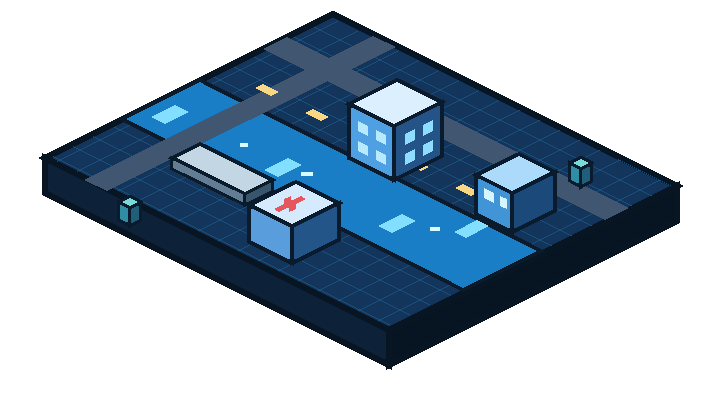

01 / BEFORE
Prepare & prevent.
- Review weather and water levels
- Prepare shelters and supplies
- Clear vulnerable drainage
READINESS ↗
SIMULATION MODEIllustrative data only. No real emergency services are connected. In an emergency, call local authorities.
A shared view of the simulated flood, across every stage of response.

Open the simulator to create a scenario.
Priorities appear when a scenario is available.
SOS asks for permission to capture your current location once. It is not continuous tracking. Coordinates are saved on this device and shared with authorized demo staff when delivered. No emergency service is contacted. Avoid shared devices.
Press ONE-CLICK SOS above to request GPS and record an SOS.
In the new tab, open the browser’s site settings (the icon beside the address), allow Location, check that device location services are enabled, then press SOS again. If access is managed by your browser or device administrator, use Send without location.
Opening a new tab does not transfer unsent records from blocked or partitioned browser storage. Keep this tab open for any pending SOS delivery.
Saved offline and retried when connected. Demo only; no responders are contacted.
Open the simulator to view the latest scenario.
Demo shelter. Contact local authorities for verified information.
Open the app once online. Reopen it when connected to send queued items.
Asset statuses appear when a scenario is available.
Demo submissions appear when connected.
Actions change the shared virtual environment. No real equipment is controlled.
Review access routes and prioritize affected areas.
Assess supplies, shelter needs and vulnerable groups.
Document impacts and coordinate follow-up support.
Plan relief allocations and track their progress.
Live model metrics and assigned mitigation controls.
Plan simulated rescue missions and review incoming SOS.
Review citizen submissions and record verification findings.
Illustrative region · not geographic navigation. Status and depths update from the shared simulation.
Shared with your role and the administrator. Plans are simulated; no supplies or rescue teams are dispatched.
Open a conversation to read and reply. Only its sender and recipient can chat; administrators can review all conversations.
Connecting to staff messenger…
Delivered only to the selected account. Administrators can review all alerts. Demo only; no real dispatch.
Manage staff below, or open an administrator-only operational workspace.
Individual accounts and operator actions.
Each operator must use their own login ID.
Staff sign-ins, account changes, intervention actions and incident status changes.